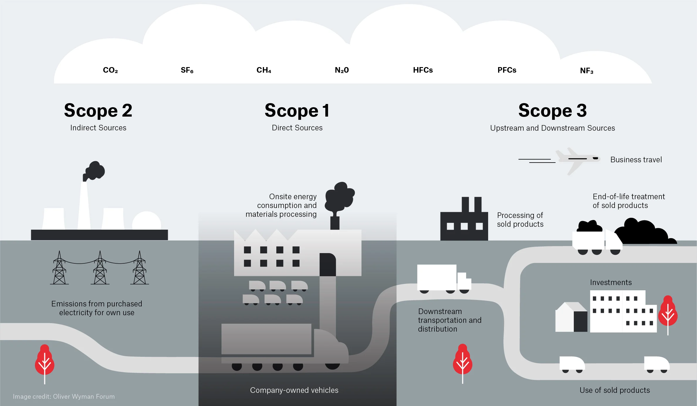

All in One View
Content from Why sustainable digital research matters
Last updated on 2026-04-15 | Edit this page
Estimated time: 20 minutes
Overview
Questions
- What are the “net zero” goals?
- What is digital research?
- Why is minimising “carbon to science” important?
Objectives
- Explain the big picture for reducing carbon emissions
- Explain how that applies to digital research
Environmental sustainability
Environmental sustainability refers to the need for human activity to be balanced with the long term health of the planet and availability of natural resources. There are many issues that can impact environmental sustainability:

The most pressing sustainability challenge facing the world is the emission of greenhouse gases driving the climate emergency. For this reason we will primarily focus on greenhouse gas emissions, in particular we’ll focus on the metric Kilograms Carbon Dioxide Equivalent (kgCO₂e). This is a simplified metric that aims to represent the impact of a range of greenhouse gases as a single figure by expressing them as an equivalent emitted quantity of Carbon Dioxide (CO₂).
The context of net zero goals
Climate change and global warming have become pressing issues in recent years. A primary cause of these phenomena is the increase in greenhouse gas emissions in the atmosphere. Greenhouse gases (for example, carbon dioxide) are responsible for trapping heat in the Earth’s atmosphere, leading to rising global temperatures. These gases are emitted from various human activities, including the burning of fossil fuels, deforestation, and industrial processes.
To combat this, many countries, including the UK have set “net zero” goals. Net zero refers to the balance between the amount of greenhouse gases emitted and the amount removed from the atmosphere. The way to achieve net zero is by reducing emissions as much as possible and decarbonising activities. The UK plans to reach net zero by 2050.
Carbon neutral vs net zero
The terms carbon neutral and net zero are often used interchangeably, but they have different meanings. They both refer to removing harmful emissions from the atmosphere, but the kind of emissions removed and the scale are different.
Carbon neutral requires taking action to reduce carbon emissions and offsetting any remaining emissions, of a given activity. Offsetting is the process of compensating for carbon emissions by investing in projects that reduce or remove an equivalent amount of carbon from the atmosphere, such as planting trees or investing in renewable energy projects. Usually organisations would first begin by reducing their carbon emissions as much as possible, and then offset the remaining emissions. For example, monitoring the carbon intensity of the electricity being used can help identify the best times to use energy, and hence reduce the carbon emissions.
Net zero refers to the balance between the amount of “all” the greenhouse gases (like carbon dioxide, methane or sulphur dioxide) emitted and the amount removed from the atmosphere. Hence, achieving net zero has a much wider scope and requires going further than just reducing carbon emissions.
To make the audience reflect a little bit before diving into the content, run a poll with the following questions:
- What do you think the main contributors are to the emissions of
digital research? Multiple choice or open question, depending on how
close we want answers to be. If a multiple choice question, the options
could be:
- Manufacture of physical devices (laptops, servers, etc)
- Running jobs in high performance computing facilities
- Developing and running software locally in laptops and workstations
- Using AI to assist research and everyday tasks
- Using cloud resources (cloud storage, continuous integration services, etc)
- What comes to mind when thinking about mindful computing? Open question.
The role of digital research
Amongst the various sources of greenhouse gas emissions, digital research is one of the contributors. Digital research involves a wide range of activities, including the use of software for data analysis, simulations, machine learning, and the use of cloud computing resources. All these activities often require significant computational power and data storage resources. Providing these digital resources requires significant production of computer hardware and leads to significant electricity consumption. Both of these aspects can lead to substantial carbon emissions.
The ICT contributions to global carbon emissions in 2007 was estimated in 1.3%, and a more recent study increases this number to 4.1% in 2021. But more striking are the predictions that ICT global emissions will reach over 14% in 2040.
While digital research will always be a fraction of all of these emissions, the UKRI Net Zero DRI Scoping Project final technical report suggests a very challenging scenario in the years to come if carbon emissions are to be kept at bay with the growing demand for energy in digital-related activities in research. For the UKRI alone, the estimated carbon emissions of digital research are 75 kilotons of CO2e per year, with 40 kilotons corresponding to large scale compute facilities and the remaining 35 kilotons related to servers, laptops and small equipment.
Digital research is important for scientific progress and has the potential to contribute to solving many of the global challenges, including climate change. However, it is necessary to ensure that the carbon emissions associated with digital research are minimised. As we will learn in the following episodes, there is not a single, big carbon producer in digital research that we can eliminate without hindering the research activity, but a myriad small activities, practices, tools and processes that, while individually do not represent a big challenge, their sheer amount results in the above estimates.

As researchers, we have a responsibility to consider the
environmental impact of our work and take steps to reduce it. This
begins with mindful computing, a term which describes a
more concious approach to planning, running and managing digital tasks
to ensure that scientific advances don’t produce more emissions than
needed. Adopting this mindset could look different to everyone. For
example, choosing a datacenter in a region powered by renewable energy
can significantly reduce a project’s carbon footprint. Another example
is storage data management, where small steps such as deleting unused
data or compressing data can reduce the carbon associated with long-term
storage. Mindful computing can also be applied to analyses tasks, by
using incremental processing or requesting the right GPU/CPU resources
when using High Performance Computing.
As researchers, we have a responsibility to consider the environmental impact of our work and take steps to reduce it. Hence, the purpose of this course is to explore how to measure and estimate the carbon emissions from digital research activities, what are the sources of these emissions, and what are some ways to reduce them.
References
Content from Energy, power and carbon
Last updated on 2026-05-06 | Edit this page
Estimated time: 40 minutes
Overview
Questions
- What is energy?
- What is power?
- How power and energy relate to carbon emissions?
- What other sources of carbon involve digital research?
- How do we calculate carbon emissions?
Objectives
- Explain what energy and power are
- Explain how energy is produced
- Explain what low-carbon energy sources are and how they opperate
- Explain what embeded carbon is
- Use the greenhouse gas (GHG) protocol to estimate carbon emissions
Energy and power
Energy is a physical property that can be used to do work. This can be lifting a weight, pushing a piston or even running a computation on a computer. The SI unit of energy is the Joule (J) but commonly the kilowatt-hour (kWh) is also used when expressing electrical energy use.
Power is a rate at which energy is drawn i.e., how much energy is used in a given amount of time. The SI unit of power is the watt (W) however kilowatts (kW) are commonly used as well.
Joules, kilowatts and kilowatt-hours
The units used for power and energy can be confusing, particularly kilowatt-hours as a unit of energy. A useful relation to bear in mind is that \(1 W = 1 J/s\). By multipling watts by another unit of time we recover units of energy with a scaling factor.
Kilowatt-hours are commonly used because they tend to work out nicely for everyday situations, e.g. a kettle may have a power rating of 1 kW so running it for an hour gives 1 kWh of electrical energy used.
Practising units of power and energy
Which of the below are not equal to 1 kWh.
- A - 200 W drawn for 12 minutes.
- B - 1000 J
- C - 3,600,000 J
- D - 5000 W drawn for 12 minutes.
- A - 0.2 kW x 0.2 hours = 0.04 kWh
- B - 1000 J = 0.00027 kWh
- C - 3,600,000 J = 1 kWh
- D - 5 kW x 0.2 hours = 1 kWh
Energy sources and carbon emissions
Energy famously cannot be created or destroyed but the electrical energy used for research activities has to come from somewhere. In practice the majority of electrical energy used for digital research comes from a national electricity grid so this will be our focus.
The electrical grid serves to transport electrical energy from electricity generators to end users. Economies of scale tend to mean that electricity generation is a large scale activity. The electrical energy supplied to the grid comes from a variety of different sources. This can be fossil fuels like coal and gas or green energy sources like solar and wind.
A key feature of electrical grids is that supply must be balanced with demand. Demand for electricity can vary greatly throughout a year or even an individual day. The grid responds to increases in demand by purchasing additional electricity from suppliers.
Energy Mix and Carbon Intensity
Different methods of electricity generation have different properties. Some of the important include:
- Cost - The cost of generating each kWh of energy.
- Carbon Intensity - A measure of the kgCO₂e emitted per kWh of energy.
- Dispatchability - How easily or quickly generation can be scaled up in response to demand.
- Predictability - How easy it is to predict the amount of generation available.
The table below provides a quick summary of how different energy sources compare on their key properties:
| Energy source | Cost | Carbon intensity | Dispatchability | Predictability |
|---|---|---|---|---|
| Gas | Medium | Medium | High | High |
| Solar | Low | Low | Low | Low |
| Wind | Low | Low | Low | Low |
| Nuclear | High | Low | Medium | High |
| Hydro | Variable | Low | Variable | High |
While solar and wind are very good in terms of cost and carbon intensity, they are unable to respond effectively to changes to demand. Gas, and to some extent, nuclear, while less appealing otherwise, can respond to these quick changes and hence complement green sources.
The energy sources used by the grid will change on an hourly timescale and some sources such as wind and solar can be subject to seasonal and climate effects. The relative cost of different sources can also be impacted by global events and markets. The sources of electricity used by the grid are referred to as the energy mix. The energy mix of the grid leads to an overall carbon intensity value given as gCO₂/kWh of electricity generated. This can also be broken down by geographical region or given as an average for a time period.
Green Energy Costs
A key aspect to note is that renewable sources of electricity generation are usually the cheapest option so the electricity grid will always try to minimise costs by using renewable sources where possible. This shows that if we can shape our demand for electricity to times where more renewable energy is available we both reduce emissions and provide an economic drive for more investment in renewable sources and less investment in sources of electricity generation based on fossil fuels.
Carbon Intensity in the UK
The following graphs show a typical UK day in 2026.

The following dynamics are at play:
- At midnight initial energy demand and carbon intensity is low.
- Around 5am, energy usage begins to increase as people wake up and businesses open. As demand increases, the proportion of gas in the energy mix increases as more gas generation is brought online to keep the grid balanced. This also drives an increase in carbon intensity.
- Carbon intensity peaks in the morning around 7am. Although energy demand continues to rise, gas usage and carbon intensity drop slightly as cheaper imported energy becomes available. Slightly later a small amount of solar power also becomes available as the sun rises.
- Demand remains steady throughout the day before increasing in the evening. This is driven by domestic usage as people come home, cook and use domestic appliances. Again additional gas generation is brought online to meet the demand and carbon intensity rises to its peak value.
- As the evening progresses and people go to bed, demand drops again and carbon intensity also falls as gas generation goes offline. Overall carbon intensity ends up lower at the end of the day than the beginning as more imported energy is available.
Real-time Carbon Intensity
- On your laptop or your phone, open https://carbonintensity.org.uk/
- Look at the current carbon intensity for our region right now. Which energy source do you think is currently marginal (‘filling the gap’ to meet demand)?
The marginal source is the most expensive source needed to meet demand. On days with lower intensity the marginal power source is usually the one with the highest dispatchability. For example, renewables are almost always used first, while nuclear energy could be more difficult to turn off. In contrast, gas is expensive but has high dispatchability.

Looking at the Generation Mix in the pie chart obtained from https://carbonintensity.org.uk/ on a sunny day in London:
- Wind (17.9%) and Solar (18.6%): These have very low variable costs. If it is windy or sunny, the grid uses all of this energy this energy first.
- Imports (44.5%): These are usually scheduled in advance based on international contracts. While they can be marginal, they can’t be as easily switched on and off.
- Gas (15.4%): High dispatchability, and can be ‘increased’ if the grid needs an immediate increase in supply.
Takeaways
The pattern shown is typical for a day in the UK. There are however many other factors that can determine the relationship between demand and carbon intensity which can play out at a variety of timescales.
There is considerable variability in the carbon intensity of electricity throughout the day - a factor of two in the above example. A simple strategy to reduce the emissions from digital research is therefore to shift electricity usage to times when carbon intensity is low. This is known as demand shifting. A simple rule of thumb is to favour running computationally intensive work at night.
Gas is a key part of the UK’s energy mix because of it’s dispatchability i.e., it’s ability to rapidly respond to changes in demand. Some green technologies like solar and wind have low dispatchability as they depend on factors like the weather.

The above graph demonstrates how carbon intensity can vary throughout the year in the UK. For the UK season is not a strong driver of carbon intensity. It is interesting to observe that the mimimum and maximum carbon intensity of the grid can vary between ~50 gCO₂/kWh and ~250 gCO₂/kWh, a factor of five.
Carbon Intensity Forecasts
For the UK there are publically available forecasts for the carbon intensity available at https://carbonintensity.org.uk.
Data sources
The above graphs were generated from publicly available data provided by the National Energy System Operator. Data was sourced from the UK Carbon Intensity API and the NESO Data Portal. The scripts used to generate the graphs available on GitHub in ImperialCollegeLondon/digital_research_sustainability_visualisations.
Embodied carbon and carbon awareness
So far we’ve focussed on the relationship between carbon emissions and electricity usage. This is relevant to the operation of equipment used in digital research and is usually the dominant component of the operational carbon. Another key source to consider however are embodied emissions.
Embodied carbon is the greenhouse gas emissions produced during the full lifecycle of a product or system before it starts being used: raw material extraction, manufacturing, transport, construction and eventual disposal or recycling. It represents the “upfront” carbon locked into goods and infrastructure. Accounting for embodied carbon helps teams choose lower‑carbon options by considering repair, reuse, material choices and service life in addition to operational energy use.
We’ll discuss in detail the embodied carbon contributions associated with digital research activities in the next episode.
The Greenhouse Gas (GHG) Protocol and how to use it
So far we’ve discussed several sources of emissions. A key requirement to managing and reducing emissions is to measure and account for them. The Greenhouse Gas Protocol provides a framework for identifying and categorising different emission sources. It’s holistic and covers both direct and indirect emission sources.
The GHG protocol breaks down emissions into three categories called scopes:
Scope 1 are direct emissions. These come from activities that directly emit carbon such as burning fuel. This would cover fuel used in a vehicle or an on-site heating system or electricity generation.
Scope 2 are indirect emissions. These come activities that draw energy produced elsewhere. This is primarily the emissions associated with electricity generation covered in detail above.
Scope 3 are “Value chain emissions”. These come from everything upstream i.e., requirements you need to carry out research activities and everything downstream i.e., emissions associated with the use of your research outputs, even by others. Upstream emissions includes things like the embodied emissions of hardware whilst downstream emissions might include use of software or data you’ve created.
The GHG protocol is most often applied to businesses, countries or cities but it can be applied at any scale including an individual or research group. It’s easy to get hung up on which scope to place emissions in but perhaps the key takeaway is to take a broad view of different emissions sources.

Emission types
Based on the GHG Protocol, categorise each of the following activities as Scope 1, Scope 2, or Scope 3.
- Powering your laptop
- Running simulations on a cloud provider
- A return flight to a conference in New York
- University-owned car that transports equipment
- Recycling an old laptop
- Leaking Ultra-low temperature (ULT) freezer
| Activity | Scope | Justification |
|---|---|---|
| 1. Powering your laptop | Scope 2 | Indirect emissions from energy purchased and used by the lab |
| 2. Running simulations on a cloud provider | Scope 3 | You are using a service but don’t own the servers |
| 3. Conference travel | Scope 3 | The airline owns the plane |
| 4. University-owned car | Scope 1 | Direct emissions by the institution |
| 5. Recycling an old laptop | Scope 3 | Downstream emissions from the laptop’s end-of-life |
| 6. Leaking Ultra-low temperature (ULT) freezer | Scope 1 | Direct emissions from leakage of equipment owned by the lab |
Carbon in Context
While digital emissions might seem small, their impacts are cumulative. To provide a clearer picture of these impacts, the following table contextualizes digital emissions against common research-related activities, such as international travel and laboratory-related activities. Thinking about digital emissions in the context of the wider usual research activities gives a better idea of what is driving carbon footprint, making it easier to see where one can make the most impactful changes.
| Activity / Item | Carbon Impact (kgCO2e) | Comparison | % of per-capita UK emissions |
|---|---|---|---|
| Running a Fume Hood (1 yr) | ~4,700 | 2.35x Return Flights (LHR-JFK) | 112% |
| Ultra-low Freezer (1 yr) | ~1,200 | Storing 10TB of data on SSD for ~3 years | 28.7% |
| Long-haul Return Flight (LHR-JFK) | 2,000 | Energy for 1 average household | 47% |
| SSD Storage (10 TB / 1 yr) | 360 | Purchasing two new laptops in a year | 8.5% |
| New Laptop (Manufacturing) | 160 | 77.6% of the carbon emissions from a 4 year lifecycle of the same laptop | 3.8% |
| Laptop Lifecycle (4 yrs) | 206 | Replacing laptop every 4 years | 4.9% |
Data assumptions and calculations:
- 4.22 tCO2e emissions per-capita in UK according to the International Energy Association
- Grid intensity: 0.136 kgCO₂/kW as the average intensity grid in England in February 20261
- Long-haul flight emission: based on a return flight in Economy class from London Heathrow to New York JFK, according to MyClimate calculator tool
- Fume Hoods: Based on an electrity consumption of 34,871 kWh/year 2
- Ultra-low Freezer: Based on a energy consumption of up to 25 kWh/day (8,900 kWh/year) of traditional cascade refrigeration systems 3.
- Household energy consumption: based on Ofgem estimate of typical household consumption in England of 2,700 kWh of electricity and 11,500 kWh of gas in a year, resulting in ~1900 kgCO2e
- SSD storage: Based on the higher end of estimated carbon emissions per TB/year 4
- New laptop: Based on the embedded emissions of a typical office laptop. It does not include operational emissions.
- Laptop Lifecycle: Based on the embedded and operational emissions of a typical office laptop.
References:
- National Energy System Operator
- Mills, E. & Sartor, D. Energy use and savings potential for laboratory fume hoods. Energy 30, 1859–1864 (2005). https://doi.org/10.1016/j.energy.2004.11.008 [Green software practitioner course]: https://learn.greensoftware.foundation/
- Kypraiou C, Varzakas T. Evolution and Evaluation of Ultra-Low Temperature Freezers: A Comprehensive Literature Review. Foods. 2025 Jun 28;14(13):2298. doi: 10.3390/foods14132298. PMID: 40647050; PMCID: PMC12248920.
- Swamit Tannu and Prashant J. Nair. 2023. The Dirty Secret of SSDs: Embodied Carbon. SIGENERGY Energy Inform. Rev. 3, 3 (October 2023), 4–9
Content from Digital research activities with sustainability issues
Last updated on 2026-05-06 | Edit this page
Estimated time: 60 minutes
Overview
Questions
- What digital research activities can have sustainability issues?
- How do different types of data storage (local vs cloud) contribute to carbon emissions?
- What factors influence the energy and power consumption of digital research workflows?
Objectives
- Identify which aspects of a research workflow are most carbon‑intensive and why.
- Explain how different storage technologies (SSD, HDD, LTO tape) differ in embodied and operational carbon emissions.
Digital Research Infrastructure
Modern digital research depends on infrastructure ranging from individual computers and devices up to the globe spanning network of the internet. In this section we’ll look at some of the different components of digital infrastructure and their relation to carbon emissions.

Computers
Computers have become an indispensible component of modern life as well as digital research. These include everyday devices such as a laptop, desktops or phones as well as servers that are accessed remotely.
Computers draw electricity during use and also produce considerable embodied emissions from production and transportation. Both embodied and operational emissions play a significant role in the carbon footprint of computing devices, but how to estimate them and reduce them is very different.
Embodied emissions
Embodied carbon emissions do not change once the machine is in your hands: they only depend on the manufacturing and transport process. However, embodied carbon emissions per year are reduced the more years the machine is in use. Hence, the longer the lifetime of the machine, the lower their embodied carbon footprint per year.
Before replacing a computer, make sure that it is really needed and that it is no longer fit for purpose.
- Can you replace just some parts to extend its lifetime, eg. memory, GPUs?
- Can you give it another useful purpose?
- Can you donate it to charity (eg. see options in the Device Donation Scheme) to extend its useful life instead of trashing it (or recycling it)?
Operational emissions
The operational emissions of a device depend on its design and performance, but also on how, when and where it is used. For this reason, it is useful to consider energy usage first as a proxy for carbon emissions.
The power consumption of digital devices can be split into idle and usage-based consumption. Idle consumption is incurred when a device is powered but not carrying out any particular operation. Additional energy is consumed as the computational load placed on the device is increased. In particular, components like CPUs, GPUs and memory will draw additional electricity and cooling systems may have to work harder to remove excess heat.
There are a number of factors that affect operational power usage:
- Age: Modern computers have generally more advanced technology that makes them more energy-efficient than older ones.
- Type: Laptops are typically more energy efficient than desktops.
- Power management settings: That control when to go to sleep after a time of inactivity, or control the CPU frequency, etc.
- Peripherals: Especially, monitors, but also printers can also consume large amounts of energy.
Utilisation
The nature of both operational and embodied energy usage highlights the importance of utilisation in relation to computing hardware. The embodied emissions of a device are a fixed overhead, so the more computational work that is carried out over the lifetime of a device the more efficiently that overhead has been invested. Similarly, as there is a mimimum power draw associated with idle usage, as utilisation of a device increases the power draw per unit of computational work decreases.
Operational vs Embedded Emissions
As a rule of thumb, for consumer electronic devices (that is laptops, desktops, tablets and phones) the embodied emissions are far in excess of operational ones. This emphasises the importance of maximising the lifetime of these devices.
For enterprise servers that have a much greater maximum operational power draw, the balance can vary due to a number of factors, not least the carbon intensity of the electricity used to power them and their utilisation. As the carbon intensity of electricity falls over time however embodied emissions are expected to increasingly dominate.
Estimating and Measuring Computer Emissions
Embodied Emissions
Finding the embodied emissions of a device relies on information provided by the manufacturer. The regulatory environment is evolving however increasingly there are legal requirements for manufacturers to publish Product Carbon Footprint (PCF) data for their products. Information can be easily found by searching the internet for “PCF” and the manufacturer’s name.
We’ll see some example PCF sheets below however it’s important to note that different manufacturers can use different methodologies and assumptions. This means it is not advised to directly compare PCF data between manufacturers.
Here is the HP EliteBook 840 G9 PCF Report:

If we exclude the Use section of the chart, which
obviously depends on the usage and the location, as discussed in the previous episode, the remaining, related to
production and transportation, accounts for about ~80% of the estimated
total, i.e. 160 kgCO₂e.
What are the embodied carbon emissions of your computer?
Find the model of the computer you are using right now to do this course and try to find out its embodied carbon emissions.
- Which part produces a larger carbon footprint?
- If it is a laptop and the battery is failing, how much carbon could you save if you just replace the battery for a new one instead of replacing the whole laptop?
Operational Emissions
The most direct and accurate option to get the idle energy usage of a consumer device is to use a plug in power meter. There are many models, but most will provide both the instantaneous power and the energy used over a period of time. This can be used both to ascertain the idle power draw of a system and to estimate the emissions of a running application by comparing to the baseline idle draw.
If measuring the energy usage of the entire device is not possible, modern hardware often supports reporting the energy consumption of different components. This varies based on the hardware and operating system but we’ll look at two common examples. RAPL (Running Average Power Limit) is a CPU feature which reports real time energy usage. Similarly nvidia-smi can report power consumption for NVIDIA GPUs.
In practice, low level interfaces like RAPL and nvidia-smi are difficult to use directly. There are more user friendly interfaces that can abstract over the particular hardware in use on your system. In particular, codecarbon is a Python application that can be used to directly measure hardware power consumption during the runtime of an application.
If it is impractical to make any direct measurements, there are also some methods to estimate power draw.
For idle power usage, one option is to check for an ECO Declaration for the equipment. For example, the ECO declaration of the HP EliteBook 840 G9 indicates an idle energy consumption of 22.67 kWh/year. This declaration also includes useful information about the product, like which components can be replaced or upgrade. The ECO Declaration is a voluntary standard so not all manufacturers provide it or it may contain incomplete information.
For estimating the power usage of a computational workload a useful resource is the Green Algorithms Calculator. This uses a simple model that combines information about the resource utilisation of a computational workload with details of the hardware it ran on.

What is the idle energy usage of your computer?
Like in the previous exercise, try to find the ECO Declaration for your computer in the manufacturer’s webpage.
- What is the reported idle energy consumption?
- How easy was it to find?
Storage Devices
Research datasets are increasingly large and replicated across multiple systems for reliability. As modern research practices move toward open data and long-term storage, the embodied and operational emissions of storage becomes a significant component of digital research’s environmental impact.

There are a few different storage mediums in common use:
- Solid-State Disk Drives (SSD): They use flash memory with no moving parts to store data, much like SD cards and USB drives, but with much larger capacity. Their embodied carbon emissions are high due to the rare metals needed for semiconductor manufacturing, while operational emissions are somewhat lower than for spinning disks.
- Hard Disk Drives (HDD): They store data on spinning magnetic disks. Embodied emissions are lower than those of SSDs but operational emissions are higher because their disks must spin continuously.
- Linear Tape-Open (LTO Tape): Magnetic tape technology used for long-term storage. Their embodied emissions are low, while their operational emissions are near zero.
Measuring and Estimating Data Storage Emissions
Similarly to computers, their associated carbon emissions can be split into operational and embedded components. Storage devices are often components of larger systems which can make it difficult to directly measure their power usage. Whilst some manufacturers do report sustainability data this is highly variable. In some cases storage device data may be included as a component of the PCF data for a complete system.
Given the general paucity of data there have been some studies that attempt to estimate emissions from different storage media. We’ve summarised some useful estimates below:
| Category | SSD | HDD | LTO tape |
|---|---|---|---|
| Embodied Carbon | High (16-32 kg)1 | Moderate (2-4 kg)1 | Low (~0.07 kg)3 |
| Operational Carbon | Low (2-5 kg)1 | Moderate - High (2-16 kg)1,2 | Low (~0 kg) |
| Lifespan | 5–10 years | 5-10 years | 30+ years |
* Emissions are in kgCO₂e per TB per year
While the numbers vary depending on manufacturers and reporting available, it is generally considered that SSDs have a higher carbon debt per unit of storage than HDDs4. However, recent data suggests that the difference for enterprise-grade drives is shrinking, and new SSDs have only 2x the embodied carbon of comparable HDDs5. While the numbers vary depending on manufacturers and reporting available, it is generally considered that SSDs have a higher ’carbon debt` per unit of storage than HDDs4. However, recent data suggests that the difference for enterprise-grade drives is shrinking, and new SSDs have only 2x the embodied carbon of comparable HDDs5.
SSDs allow data to be accessed almost instantly and are typically 10–100× faster than HDDs. LTO tapes offer the slowest access speeds, but they remain the preferred option for storing cold data due to their low cost, low embodied emissions and great energy efficiency.
Data Centres
Beyond personal computing devices like laptops and PC’s, much computing infrastructure is now accessed remotely. In this case the computers are generally hosted in a data centre, a large industrial facility that can contain thousands of servers and the supporting infrastructure required to allow remote access.
The carbon emissions associated with the computers and storage devices in a data centre are covered above. As purpose built facilities, data centres can host more specialised equipment and benefit from economies of scale. They also have additional emissions sources beyond the individual servers they house.
Data centre embodied emissions:
- data-centre construction: includes the concrete, steel, electrical infrastructure, etc.
- networking and supporting hardware: as the servers in a data centre are accessed remotely they must be serviced by network infrastructure such as switches and cables.
- cooling: the density of compute in data centres means they must have dedicated infrastructure for cooling. More information on this topic, in particular the water usage, is discussed below.
- electrical infrastructure: the high power demands of data centres can require construction of additional electrical infrastructure in the local area to support connection to the grid.
There are additional sources of operational emissions as well:
- power for infrastructure: this includes the networking infrastructure, cooling systems, lighting, etc.
- power distribution overheads: data centers deal with large amounts of electrical and encounter overheads in its distribution and transformation.
The energy efficiency of data centres is usually measured as their Power Usage Effectiveness (PUE), and determines how much of the energy entering the data centre reaches the IT equipment used for servers and storage compared to the energy used for other purposes like cooling.
\[ \mathbf{PUE} = \frac{\text{Total Facility Power}}{\text{IT Equipment Power}} \]

An average data centre has a PUE of around 1.59, meaning that for every 1 watt used to power computational resources, an additional 0.59 watts is spent on cooling and power distribution. Newer and larger data centres tend to be more efficient11, with a global average PUE of 1.41 in 202511.
The operational emissions of data centers depends heavily on the grid carbon intensity, with lower emissions in renewable-powered regions and higher emissions in fossil-fuel-dominated regions.
Despite the additional emissions sources, data centres have the ability to be far more energy efficient than the equivalent collection of individual computers or storage devices. This is due to their scale and specialisation and the provision of infrastructure that can be shared between many users.
| Category | Data Center | Local Equipment |
|---|---|---|
| Embodied Carbon | Lower (shared + efficient infrastructure) | Higher (duplication + under‑used hardware) |
| Operational Carbon | Usually lower (efficient cooling) | Usually higher (older facilities + local grid) |
| Energy Efficiency | High (fewer idle disks) | Generally lower |
| Utilisation | High (resources shared across many users) | Lower (over‑provisioning) |
Data centres and water usage
While this course focuses on the carbon emissions via the electricity usage, there is another big environmental factor associated to the running of data centres: water.
Water in data centres is used in huge amounts for cooling purposes. Recent studies suggest that medium-size data centres consume more than 1 million litres of water per day, while for large data centres, this number jumps to about 23 million litres per day, equivalent to the daily usage of about 50,000 households in the US.
Except in cooler locations where natural or air-only cooling (“free cooling”) can be enough to extract all the heat generated during computation from the data centres, in most cases, some level of water-based cooling is required. There are two broad methods for water-cooled data centres:
- Using air cooling with water evaporation in chillers. This is an open-loop method where water is lost into the atmosphere - hence removing it from the reservoir it was taken from, and therefore wasteful - but it is technically simpler to implement.
- Via direct liquid cooling, where the coolant (not necessarily water) is directly in contact with the processing unit. Direct-to-chip liquid cooling and immersive liquid cooling are two server liquid cooling technologies that dissipate heat while significantly reducing water consumption, but at a much higher cost and technical complexity.
While not as commonly available as the Power Usage Effectiveness (PUE), some data centres provide a Water Usage Effectiveness (WUE) that measures how much water is used per kWh of energy used. The ideal cases is 0 l/kWh, where no water at all is used, but most common values are around 1.9 l/kWh.
Data Centres and The Cloud
The “cloud” is the delivery model for computing services over the internet. Cloud services are implemented and run on physical data centres owned and operated by cloud providers. Because cloud providers benefit from the advantages of data centre hosting, cloud deployments are often more energy and carbon efficient than many small scale on‑premise setups - but the cloud’s actual footprint still depends on the provider’s hardware, PUE, electricity grid mix and redundancy/replication practices.
Depending on the size of the group and their engagement, the following challenge can also be done collectively as a class:
- Participants go in turns suggesting items, and the instructor writes them in a whiteboard
- Participants write items in post-its and then stick them on a wall
Both options can be done for remote delivery of the course, using digital whiteboards. Finally, the instructor comments on the results.
What do you use data centres for?
There are way more things that we initially may think that make use of data centres, some related to digital research but plenty of others that do not.
In small groups, reflect and discuss which daily activities in your everyday life make use of data centres, sorting them into digital research, other work-related activities, and personal activities.
- Where do you have more items?
- Which category do you think consume more data centre power?
- After talking to your colleagues, did anything surprise you about what uses data centres?
Each group is likely to have a different list, but some of the items that are likely to be present in most of them are:
- Digital research
- Store some code in GitHub, Codeberg or other platform
- Run continuous integration workflows
- Run software - including AI training - in cloud services
- Store large amounts of research data with a cloud provider
- Other work related activities
- Send emails
- Meet colleagues via Teams or Zoom
- Store some office documents in Onedrive, Dropbox or similiar
- Personal activities
- Use instant message apps with family and friends
- Send personal emails
- Stream music or films
- Check social media
- Order food
- Buy items in online shops
- Read online newspapers, blogposts or similar
- Check the weather forecast
- Check Google Maps or other similar applications
- Review your bank account
- …
As you see, a lot of our daily activities go through a data centre somewhere and while digital research will make heavy use of these facilities because they are intensive workflows, the sheer amount of other small tasks can easily offset the carbon emissions of the former when considered collectively.
Data Centre Expansion, Hyperscalers and AI

Increasingly, data centres are appearing in the media in a negative light due to their power and water consumption. Data centres consume around 2.5% of the UK’s electricity and the annual consumption is expected to increase by 4 times by 20308. In the U.S., data centres are predicted to use up to 12% of the country’s electricity by 2028, a 3x increase from 4.4% in 20259.
Much of this expansion is driven by a relatively small number of tech companies. The compute demands of training and serving AI models is also driving a noticable increase. In the UK the Department of Science Innovation and Technology have projected a need for 6GW of AI ready data centre capacity by 203013 compared to overall current national demand of ~30-35 GW.
Additionally there have been reports of tech companies obscuring and under-reporting the emissions associated with data centres. This Guardian article for instance covers how, the industry frequently tries to obscure its true carbon footprint in a number of ways. One such way is the use of renewable energy certificates (Recs), where a data centre company can make itself appear to purchase some percentage of its energy from renewable sources, despite that energy not reaching the facility. The companies frequently report ‘market-based’ emissions, which are manipulated by the inclusion of Recs, but look out for the ‘location-based’ emissions figure for a less misleading view of their carbon footprint.
Measuring and Estimating Cloud Emissions
If you’re making use of resources housed in a data centre you are unlikely to be able to directly measure device or component level power consumption. In many cases when consuming cloud based resources you may not even know what hardware is being used. In this case you’re heavily dependent of information provided by the service operator or third party estimates. Particularly in the case of cloud providers this can become highly complex with many factors at play.
Some cloud providers do provide tooling for making exposing sustainability information. For example AWS Sustainability Console, Google Carbon Footprint and the Microsoft Emissions Impact Dashboard.
Research Activities
Simulation, Modelling and Data Analysis
The primary infrastructure required to carry out these activities is access to computation. This can be provided by a laptop, desktop or a server hosted in a data centre.
Factors to consider:
- Embodied and operational emissions are both key contributors. Optimally, a given amount of compute should be provided by the minimum associated embodied emissions. It’s therefore key to maximise utilisation of hardware rather than investing in more. This strongly promotes using computational computational services based on shared infrastructure (such as cloud or high performance computing facilities) where utilisation can be kept high and operational emissions are greatly reduced compared to individual desktops or laptops.
- Computational Architectures have become increasingly diverse in recent years both for CPUs and for accelerators (e.g. GPUs). Computational problems can have very different electricity comsumption depending on the architecture used so choosing the right one can be very impactful.
- Doing less computation is also worth considering. This can take the form of planning computational workloads carefully to minimise resource usage or limiting work carried out for speculative or exploratory purposes.
- Code optimisation is the art of minimising the computational resources required to solve a given problem. This can take various forms depending on programming language and computational architecture but impressive speed ups can be obtained in some cases compared with unoptimised code.
- Carbon awareness is making your use of digital resources responsive to changes in carbon intensity of electricity generation. This can take different forms, for example, moving use to locations which have lower carbon intensities, changing the time at which you consume electricity to periods with lower carbon intensities or even making your workload intensity responsive to carbon intensity forecasts to minimise operational emissions.
Research Data Management
Storing Data
Generally when presented with a choice between buying your own storage devices or using a storage service, it will be more sustainable to use the latter. That said, local storage has a number of advantages, including greater control over data, predictable access speeds, and the ability to power equipment down when not in use. Typically research organisations will provide dedicated storage services for research data.
Factors to consider (to be expanded):
- Delete unused or redundant data and avoid unnecessary replication.
- Keep frequently accessed data on faster storage (SSDs) and move “cold” or infrequently accessed data to slower but more energy efficient systems (tape storage)12.
- Use compression and efficient file formats to reduce storage requirements
- Consider cleaning and preprocessing data locally before storing.
- Choose storage options designed for infrequent access when appropiate.
Data Management Plans
The best time to think about how to manage you data is before you collect or generate it. This is the purpose of a Data Management Plan (DMP), a document that describes how you will handle your data during and after a research project. DMPs are often required by funding agencies and research institutions, but they are also a good practice to ensure that your data is well organised, documented and preserved.
In addition to being a good scientific practice, DMPs can also help you to reduce the carbon footprint of your data. Tracking and monitoring your data in this manner can help you to identify (and where possible, avoid) unnecessary data collection and storage. This will in turn help you to make informed decisions about your data management practices and making them more sustainable.
The UK Data Service provides a data management planning overview and a checklist of key points to consider when creating a DMP.
Use of Computational Services
Rather than directly using a computer, many digital research activities are provided by accessing services over the internet. Ultimately these services are provided by physical infrastructure however, as an end user, it can be very difficult to know how your activity corresponds to resource consumption. In these cases we usually have to depend on information from the service provider or make relative comparisons through proxy metrics.
It’s not possible to comprehensively cover the services used in modern digital research so below we’ve chosen a few examplars to look at in detail.
Code Hosting and Continuous Integration/Deployment
The use of services such as GitHub and GitLab have become an indispensible component of modern software development. Notably these services provide access to compute resources to run Continous Integration/Deployment (CI/CD) workflows. It’s common to run these workflows in a “matrix” configuration across variables such as operating system and software version which can lead to large parallel computational workloads executing.
CI/CD workflows are executed by servers acting as runners. Most services provide hosted runners for general use and support self-hosting a runner if you provide your own server. The latter case is amenable to the measurement and estimation methods discussed above. If using runners hosted by the service however, usually you will have no control or visibility over where workflows are executed or the underlying hardware they use. Direct measurement of energy usage in this case is not possible and there is insufficient information to use approaches like the Green Algorithms Calculator. Instead Eco CI is a tool that has been developed to estimate the carbon emissions of CI/CD workflows. It supports GitHub and GitLab.
To reduce emissions from CI/CD usage consider ways to reduce the number of workflow executions whilst maintaing strong quality assurance checks. Some strategies are explored in this poster from the Imperial Research Software Engineering team.
Generative AI
Increasingly, generative AI services are used to generate text, images and computer code with consequent diverse applications in digital research. Emissions associated with generative AI models can be split into two components:
- Training is carried out as a one-off process before you even interact with a model. These are all of the resources required to gather training data, design the architecture and parameterise model weights.
- Inference occurs whenever you interact with a model, typically by providing a prompt. This refers to the energy required to transmit your prompt, generate the response and transmit it back to you.
There are some important factors to bear in mind when interacting with LLMs that drive emissions:
- Model size: Larger models typically require more energy to run.
- Query count: The more queries you make to a model, the more energy it will consume. Hence, being mindful of the number of interactions and trying to batch queries when possible can help reduce emissions comparatively.
- Response token count: The length of the response generated by the model can also impact energy usage, as longer responses require more computation. Reducing the length of the response by being more specific in your prompt might help.
A useful tool to estimate the environmental impact of AI usage is EcoLogits. It’s available as a Python package or an online version is hosted by HuggingFace. It is currently limited to text generation with Large Language Models ond only covers the inference stage. Whilst it supports as many open LLMs as possible it only has data for a limited number of proprietary LLMs where information is available about the model architecture.
References
- Swamit Tannu and Prashant J. Nair. 2023. The Dirty Secret of SSDs: Embodied Carbon. SIGENERGY Energy Inform. Rev. 3, 3 (October 2023), 4–9
- Based on Seagate EXOS X18
- Based on LTO 9 - FUJIFILM. Sustainability Report 2020. 2020
- Rteil, N., Kenny, R., Andrews, D., & Kerwin, K. (2025). Understanding the carbon footprint of storage media: A critical review of embodied emissions in hard disk drives. International Journal of Environmental and Ecological Engineering, 19(11), 263–270
- How Do the Embodied Carbon Dioxide Equivalents of Flash Compare to HDDs?
- Digital Decarbonisation - CO₂e Data Calculator
- WholeGrain DIgital Report
- National Energy System Operator
- U.S. Department of Energy - 2024 Report on U.S. Data Center Energy Use
- Uptime Institute, Large data centres are mostly more efficient, analysis confirms, 7 February 2024
- IEA, Energy and AI, April 2025, p259
- Sustainable computing in science - EMBL-EBI
- Data centres: planning policy, sustainability and resiliance
Content from Case Study 1 - Researcher
Last updated on 2026-04-20 | Edit this page
Estimated time: 30 minutes
Overview
Questions
- What are the sustainability considerations related to research software development?
Objectives
- Introduce a representative research case study relating to research software development.
- Explore ways to measure and estimate carbon emissions from research software development.
- Explore ways to reduce the carbon emissions associated with a given workload.
Scenario
Celia is a Research Software Engineer that works as part of a research group. Two years ago, she developed and released a Python package (hosted on PyPI) with a novel data analysis technique relevant to her research area. The package has been a big success and has been widely adopted. However, she has heard from some users that they are using it on increasingly large datasets that leads to demanding memory requirements and slow performance.
Celia is concerned about the environmental impact of her software package. She wants to assess the carbon emissions associated with both the development and usage of her package and identify ways to reduce these emissions.
To begin with, Celia identifies the sources of carbon emissions associated with her work and categorises them under the GHG protocol.
Challenge 1: Identify Scope of the Emissions
Under which scope would the following activities from Celia’s work be categorised?
- Emissions from electricity usage of the hardware used for software development.
- Embedded emissions from hardware used for software development.
- Use of services such as GitHub Actions and AI Coding agents.
- Electricity usage when users of the package run the code.
- Scope 2
- Scope 3
- Scope 3
- Scope 3
Celia should assess the balance of emissions involved in development of the code base versus its usage. She should look at how to estimate these then focus her emission reduction measures appropriately.
Collecting Information
Celia decides to learn more about each of the emission sources, starting with inspecting the hardware she uses for the package development. She primarily works on her laptop, on an average, using it for 20 hours per week for the software development. From the Product Carbon Footprint (PCF) data sheet for her laptop, she finds the embedded emissions associated with the hardware components - CPU (50 kg CO2e), GPU (30 kg CO2e), and RAM (20 kg CO2e).
Next, she reviews the code base and notices that it is not optimised for performance. She finds that the code runs on a single CPU core and does not make use of any GPU acceleration. She also finds that there are some redundant computations in the code that could be optimised.
To ensure that her software package follows best practices, she has been using GitHub Actions for continuous integration and testing. At present, there are around 5 workflows that run on GitHub Actions, and they run around 10 times a day.
For creating inline documentation for her code, Celia has been using AI coding agents. While she is not using them frequently, she notices that on an average, she writes approximately 20 prompts to the agents every week.
Finally, Celia reaches out to her research group members who are users of her package. They agree to provide the necessary information on their usage of the package. She finds that they are using it on a local server with 16 CPU cores and 64 GB of RAM. They run the package for around 4 hours per week.
Analysis
Celia tracks the activities for a week to get an estimate of the emissions associated with her software development and usage. From the PCF data sheet for her laptop, the embedded emissions from the hardware components (CPU + GPU + RAM) is 100 kg CO2e. Moreover, since her code is not optimised for performance, it has been consuming more computational resources and is taking longer to run than it should, leading to higher emissions. The runtime of the code on a single CPU core is around 4 hours per week.
The five workflows on GitHub Actions that run around 10 times a day, have a total runtime of 2940 seconds per week. Whereas, the 20 prompts to the AI coding agents every week have a total runtime of around 20 minutes per week. At present, she is not aware of any tools that can be used to estimate the emissions from the use of GitHub Actions and AI coding agents. So decides to use them sparingly and only when necessary.
Finally, to compute the carbon footprint of her software package, she uses the Green Algorithms Calculator. For the same, she records the following information:
- Runtime of package in hours and minutes
- Types of cores used (CPU, GPU, or both)
- Number of cores used
- Model used
- Memory available in GB
- Platform used for the software development (e.g. local server, personal computer, cloud computing)
- Location to retrieve the energy mix of the location
- Real usage factor of the CPU
- Power Usage Efficiency (PUE) of the local data centre (if applicable)
- Any multiplicative factor to use
Taking Action
After Celia has identified the emissions sources associated with the development and usage of her software package, she takes some measures to reduce these emissions.
She optimises the code base to reduce the computational resources and runtime of its use. This includes optimising the error handling and input validation in her code to reduce the likelihood of running into errors that lead to repeated runs of the code. Thus, minimising wasted computation. She integrates the codecarbon tool into her code base so that it can report the carbon emissions when the code is run. This allows her to track the emissions associated with the usage of her package and identify areas for further optimisation.
The users of her package (members of her research group) have been asking her for help with optimising the performance of the code. She provides them with some tips on how to optimise the performance of the code when they run it on their local machines. Additionally, she creates a detailed user guide that includes instructions on how to make the most efficient use of her package, including tips on how to optimise the performance of the code when running it on different hardware configurations.
Her package only intends to support a specific set of OS and Python versions. Therefore, she reduces the number of tests run on GitHub Actions to only include these OS and Python versions. Moreover, to minimise the number of jobs run in each workflow, she makes sure that they are run on pull requests against the primary development branch only.
References
- Product Carbon Footprint (PCF) data for Dell products
- Research software development can have significant environmental impacts.
- Measuring and estimating carbon emissions from research software development is important for identifying areas for improvement.
Content from Case Study 2 - Lab Scientist doing computational work
Last updated on 2026-04-20 | Edit this page
Estimated time: 14 minutes
Overview
Questions
- How does the increasing use of LLMs affect carbon foorprint and energy efficiency?
- What strategies can minimise the carbon footprint of research data storage?
- How does relying on old hardware prevent a modern research lab from being energy efficient?
Objectives
- Introduce a representative case study relating to carbon emissions in typical computational lab workflows
- Identify tools and resources to help estimate emissions associated with daily computational research tasks
- Quantify carbon emissions associated with using LLMs to generate Python scripts
- Quantify carbon emissions associated with storing research data
Introduction
Emma is a researcher in a biology lab and was tasked with analysing genomic sequencing data. While she is an expert in molecular biology, her computational and statistics background is limited. Due to the type and volume of data generated in the lab, she chose to write custom Python scripts to analyse her data. The project Emma is working on is scheduled to run for 5 years.
Emma’s set up:
- Work laptop: modern and energy efficient laptop
- Data storage: Her research will generate approx 3.5 Tb for the duration of the project. She is planning to back up 2 copies of the raw data on different HDDs. In addition, she will generate approx. 400 GB of processed data every year, which will be used for active analyses, which she plans to store on different HDDs. While the project only runs for 5 years,there is a 10 year data retention period to comply with her funding’s coniditions
Emma’s Workflow:
- She uses cloud-based LLMs to write her scripts for processing and analysing data. This often requires many queries and iterations.
- She keeps every version of her raw data on the HDDs, and rarely deletes old files.
- After pre-processing the raw data, she stores a copy of the processed data on different HDDs
- She runs her scripts on the lab Desktop station and scripts often take 12-16 hours to complete. Sometimes Emma leaves the Desktop running 24/7 even over the weekends, so the scripts could finish running.
Emma is interested in reducing her digital carbon footprint and wants to optimise her computational workflow to balance scientific rigour with environmental responsibility.
Challenge 1: Identify Emissions
Sort the items below into Scope 1, Scope 2 or Scope 3 emissions:
- The electricity powering the lab Desktop during a 16-hour run
- The manufacturing of Emmas’s personal laptop
- The energy used by the LLM provider to write the data processing and analysis code
- The energy used by cloud-storage provider to store Emma’s data
- The external monitors used with the lab Desktop
- The electricity powering the lab Desktop (Scope 2)
- The manufacturing of Emmas’s personal laptop (Scope 3)
- The energy used by the LLM provider to write the data processing and analysis code (Scope 3)
- The energy used by cloud-storage provider to store Emma’s data (Scope 3)
- The external monitors used with the Lab Desktop (Scope 2)
Collecting information
Data storage
Emma is considering using differnt storage types after she heard that storing large amounts of data on HDDs might not be the most evironmentally friendly choice. She has heard from other colleagues that she could choose between hard drives (HDD), Solid State Drives (SDD), LTO magnetic tapes or cloud-based storage. However, she is unsure about the enivronmental impacts of these.
She found the following information for the carbon footprint associated with the four storage types and found the following:
- SDDs are the most carbon efficient when in operation, but their manufacturing produces significantly more emissions.
- HDDs have a lifespan of 5-10 years, similar to that of SDDs. Their embodied emissions are significantly lower than that of SDDs but operational emissions are higher.
- Tape storage has a longer lifespan (10-15 years), with modern ones reaching up to 30 years. However, moving and accessing data on a LTO tape is slow.
- Cloud storage’s associated emissions are estimated between 2-40 kg CO₂e/TB/year (according to a WholeGrain report and Greenly), but the value depends heavily on the data center’s efficiency and the region’s power grid. Embodied emissions are hard to estimate and depend on the hardware used by the provider (HDDs or SSDs). They are often included in the operational carbon footprint emissions.
The carbon emissions associated with the four storage types are summarised below:
| Category | SDD | HDD | LTO tape | Cloud |
|---|---|---|---|---|
| Embodied Carbon | High (16-32 kg)1 | Moderate (2-4 kg)1 | Low (~0.07 kg)3 | Difficult to estimate |
| Operational Carbon | Low (2-5 kg)1 | Moderate - High (2-16 kg)1,2 | Low (~0 kg) | Moderate - High (2-40 kg) |
| Lifespan | 5–10 years | 5-10 years | 30+ years | Depends on provider |
* Emissions are in kg CO₂e per TB per year
Emma’s research produces 700 GB of raw data each year, and since her project will run for five years, she will accumulate 3.5 TB of raw data. Because she keeps two copies of all raw data, the total required storage for raw data comes to 7 TB. Beyond that, Emma generates an additional 400 GB of processed data per year, adding up to 2 TB over the duration of the project. Altogether, Emma will need 9 TB of storage to keep both raw and processed data.
Emma works out that storing the 9 TB data on HDDs will have associated carbon emissions approximately equal to 108 kgCO2e in combined embodied and operational emissions, based on the average values within the emissions ranges she identified.
LLMs use
Emma is also concerned about the carbon footprint of her increasing use of LLMs to write the Python code to process and analyse her data. While the exact carbon footprint of using LLMs is hard to quantify, she found the following:
The carbon emissions associated with LLM use come from model training emissions, inference calls (queries) emissions, and infrastructure and hardware emissions.
-
When it comes to programming-related queries, Emma found the following data:
- some LLM models emit between 20% and 59% less emissions than human programmers (GPT-4o-mini), while other models can emit 5 to 19 times more carbon than human programmers (GPT4)1
- the number of inference calls (queries) has a high correlation to the amount of carbon emissions 1
Based on her current workflow, Emma uses a reasoning model to write her scripts, often requiring more than 30 queries to the LLM to debug and obtain a script which produces correct results. Using HuggingFace’s Ecologits calculator tool, she finds that queries generating code using GPT-5 model estimate approx. 10.8 gCO2e per query. In her case, running 30 queries generates 0.324 kgCO2e, assuming she only has to do this once.
Emissions from running her scripts
Emma also begins estimating the carbon emissions associated with running her scripts. Since she cannot find the exact specifications of the old desktop, she uses a 0.3 kW power draw, a value she found commonly cited for older computer stations. However, she is still unable to find any information on the embodied carbon cost of the lab Desktop. To estimate operational emissions, she uses data from official UK grid sources (such as EnergyDashboard), and finds a grid carbon intensity of 194 gCO₂/kW on a day with overcast skies and mild winds, typical of the area she works in.
She uses the information gathered to calculate the total emissions associated with running her scripts for 16 to a total of 0.931 kgCO2e. However, this number is probably going to be higher, as Emma is likely to run the script several times throughout the course. Assuming, she runs the scripts once a year, the total carbon emissions would be closer to approx. 4.656 kgCO2e.
Greatest source of carbon emissions
Based on her calculations, Emma concludes that storing her research data and running her Python scripts are the activities with the largest associated carbon emissions. Even so, the emissions linked to using LLMs to help write her code are not insignificant. With this in mind, Emma begins developing an improved research workflow to reduce her digital carbon footprint.
Analysis
She has heard that her institution provides a tape-based cold storage options located in two different campuses and which are intended for data that is not accessed very often. She decides to keep the two copies of the raw data on the LTO-tape based storage provided by her institution, with each copy being stored at a different site. This ensures the data is safe in case something happens with one of the storages. She decides to keep her processed data on HDDs, as she needs easy and fast data access for analyses.
Emma also decides to switch to using her modern laptop to run her scripts to further reduce her carbon emissions. While the carbon footprint of using the LLM to generate her scripts is not as high as that associated with data storage and running her scripts, she decides to switch to a more simple LLM model, which is more suitable for the type of Python code she is generating.
Emma now wants to quantify the difference in carbon emissions between her existing workflow (Scenario 1) and the improved one (Scenario 2).
Scenario 1 (Current Workflow)
- Emma uses a reasoning model to write her scripts, requiring 30 queries to debug.
- She backs up her raw and processed data (9 TB total) on HDDs.
- She runs her script on the old lab Desktop, which takes 16 hours to finish.
Based on the calculations Emma has already done above, the total carbon emissions associated with her current workflow are ~113 kgCO2.
Scenario 2 (Improved Workflow)
- Emma switches to GPT-40-mini, which has a lower carbon footprint per query, and since her computational requirements are fairly light. However, debugging now takes 50 queries.
- She keeps the two copies of raw data (7 TB) in the LTO-tape based facilities provided by her institution. She keeps the processed data (2 TB) on HDDs for active work
- She runs her scripts on her modern laptop, which take 6h to finish.
Given all we know about Emma’s workflow, calculate the emissions associated with the current workflow and the improved workflow.
Using modern laptop instead of old lab Desktop
Emma is using her modern laptop and looks up the specifications for her model to get more more accurate emissions. She finds that her laptop has a Core i6-1145G7 process, with 4 CPU cores and 64 GB memory. She uses the Green-algorithms calculator to find that her computer emits 53.20 gCO2e each time she runs the script for 6 hours. If she runs the script once every year, the total emissions would be 0.266 kgCo2e.
New data storage strategy
Given that magnetic tape has negligible emissions when idle, we can assume that the total emissions from storing data on tape come from embodied emissions, estimated at ~0.07 kgCO₂ per TB. Keeping the two copies of raw data (7 GB) in the institution’s LTO‑tape storage facilities would therefore generate:
\[ E_{tape storage} = 0.07 kgCO₂e/TB/year \times 7 TB \\ E_{tape storage} = 0.49 kgCO₂e/year \]
Keeping the 2 GB of processed data on HDDs would generate:
\[ E_{HDDs} = 3 kgCO₂e/TB/year \times 2 TB + 9 kgCO₂e/TB/year \times 2 TB \\ E_{HDDs} = 24 kgCO₂e/year \]
Therefore, the total costs associated with storing Emma’s research data would be 24.49 kgCO₂e.
Switching to a simpler LLM model
Emma is planning to switch from a reasoning model to a smaller LLM model, GPT4-0-mini, for which emissions are estimated to be around 562 mgCO₂e per query.
\[ E_{LLM} = 0.562 gCO₂e/query \times 50 queries \\ E_{LLM} = 0.028 kgCO₂e \\ \]
The total emissions associated with using the simpler LLM would be approx. 0.028 kgCO₂e.
A comparison of the emissions associated with both scenarios can be found below:
| Scenario 1 (Current Workflow) | Scenario 2 (Improved Workflow) | Change | |
|---|---|---|---|
| Emissions Storage (kgCO₂e) | 108 kg/year | 24.49 kg/year | HDDs only -> LTO tape + HDDs |
| Emissions Computing (kgCO₂e) | 4.656 kg total | 0.266 kg total | old lab Desktop -> modern laptop |
| Emissions LLM (kgCO₂e) | 0.324 kg | 0.028 kg | GPT-5 -> GPT-4-o-mini |
Switching to the new, improved workflow would result in a six-fold reduction in Emma’s carbon emissions. Particularly, moving from storing data on HDDs to a hybrid storing approach that includes both HDDs and LTO-tapes has the greatest impact on lowering emissions.
Steps to reduce emissions
Emma is happy with her carbon footprint after adopting the new workflow. Building on this initial success, she has also identified several additional strategies to further minimise her digital carbon footprint:
- Schedule to run her scripts for then the grid is cleanest
- Use compression technique to further reduce the size of her stored data
- Identify and delete dark data (data that is stored but never used again)
- Process the data before uploading to cloud to reduce storage requirements
- Change which LLMs models she uses based on the task complexity
- Make use of tools such as EcoLogits (open-source Python library to estimate the carbon footprint of inference queries made to LLMs) and online LLM carbon emissions leaderboards
References
Content from Case Study 3 - HPC User
Last updated on 2026-05-06 | Edit this page
Estimated time: 30 minutes
Overview
Questions
- What are the sustainability considerations related to High Performance Computing?
Objectives
- Introduce a representative research case study relating to High Peformance Computing.
- Explore ways to measure and estimate carbon emissions from High Performance Computing clusters.
- Explore ways to reduce the carbon emissions associated with a given workload.
Introduction
Hugh is a computational chemist in a research group whose work involves high fidelity simulations of the dynamic behaviour of atomistic systems. His work requires computational resources far beyond that of a single machine so he makes use of a number of High Performance Computing facilities.
Hugh is working on several different research questions that requires the use of different simulation softwares. Choice of which software to use is usually driven by existing research data and the capabilities of different codes. Whilst he often makes use of software that has been pre-installed by system administrators, he sometimes has to compile packages himself.
In addition to simulation work, Hugh carries out data analysis and creates visualisations.
Hugh has access to 2 different HPC facilities he can make use of:
- a general purpose institutional cluster offering a mix of CPUs.
- a cluster providing targeted support for the atomistic simulation community.
Both facilities are heavily subscribed and Hugh tries to maximise his throughput at all times. Workloads on these clusters are submitted to a queue and will start running at an unknown time. Almost all of his workloads run for at least 48 hours.
Collecting Information
Hugh starts by doing some background reasearch about the two clusters he uses.
DRAGONFLY is a cluster based in London. It doesn’t publish any sustainability information. The documentation pages provide some lists of the available hardware but these are fairly high level and don’t include specific CPU or server models.
LANCER is a cluster based in Wales. Its documentation has some dedicated information on sustainability including a GHG analysis of the cluster. This includes an embodied emissions analysis as well as total power usage. Most usefully Hugh finds that the cluster provides a tool for users to estimate the carbon emissions of their workloads. This tool has been tested and calibrated for the cluster so should be fairly accurate.
Hugh then considers each of the emissions sources in turn.
Electricity usage from HPC workloads
Hugh realises that carbon emissions associated with his HPC usage are directly related to his level of usage. Currently Hugh is fairly sure he uses LANCER the most but he doesn’t track exactly how much and what workloads he runs. Collecting this data will be an important first step.
Even without detailed data Hugh is confident that his simulation workloads form more than 90% of his cluster usage. As the data analysis workflows also tend to be more diverse he decides to focus his initial efforts on his simulation workloads as he will get the most impact from improving those.
Hugh also notes that most of his simulation workloads run for at least 48 hours and he has no control over when they start running. He therefore concludes that there is little scope to exploit demand shifting to reduce carbon intensity.
Embodied Emissions from HPC facilities
Whilst the embodied emissions for the clusters are relevant to calculating the carbon impact of his work, Hugh notes that these are a sunk cost that he is unable to impact at this point. LANCER provides some data but DRAGONFLY doesn’t provide nearly enough information to make much headway. Hugh emails the admins of DRAGONFLY but they’re unable to provide him with more information. Based on this Hugh decides not to consider embodied emissions in his analysis.
Analysis
Delivery of the rest of this material is intended to go in two phases:
Attendees are expected to complete the “Estimating Emissions” challenge. This is best done in groups. After the group task, attendees can report back on what they’ve come up with.
Then attendees can open the spoiler tag - “Hugh’s estimates”. This section provides the “canonical” outcome of Hugh’s emissions estimates and further develops the scenario so that reductions in emissions can be considered. It is recommended that the groups from above look through the section together and complete the embedded challenge.
Estimating Emissions
Based on the scenario described above how could Hugh estimate the carbon emissions associated with his HPC workloads over a year? What additional data would he need to collect?
Hugh needs two things.
- An estimate of his resource usage over a year. It may be possible to reconstruct this from historical data or he may have to monitor his usage for a period of time and then extrapolate to annual usage from there. To simplify this he can focus on only his main simulation campaigns and exclude any data analysis workloads. Key data he’ll want to track includes CPU-hours and Gb-hours of memory usage.
- A method to estimate emissions from his usage. For LANCER this is straightforward using the tooling that’s supplied for the cluster. Making an estimate for DRAGONFLY is harder without equivalent tooling. There are several options. Hugh could attempt to use a model like the Green Algorithms Calculator if he has sufficient information about the hardware used by DRAGONFLY. A simpler alternative would be to assume that emissions for a given set of resources are the same between DRAGONFLY and LANCER then extrapolate from LANCER emissions estimates to get equivalents for DRAGONFLY. In both cases the estimate for DRAGONFLY is likely to be much more approximate but is still useful to have.
For the next two weeks Hugh keeps track of the workloads that he runs on the different clusters. He tracks the total CPU-hours spent on different clusters and the different simulation codes used on each one. He also gets the total estimated emissions for LANCER using the provided cluster tooling.
| Cluster | Simulation Code | Total CPU-hours | Notes | Emissions (kgCO₂e) |
|---|---|---|---|---|
| DRAGONFLY | GROMINZ | 45,000 | Self-compiled | |
| ORANGE | 30,000 | |||
| LUMMPS | 20,000 | |||
| LANCER | GROMINZ | 60,000 | Self-compiled | 32 |
| ORANGE | 40,000 | 21 | ||
| LUMMPS | 75,000 | 40 |
The total estimated emissions are 94 kgCO₂e from the two week period. Hugh also decides to estimate his emissions from DRAGONFLY by scaling the emissions of LANCER by the difference in CPU-hours used on both systems - he’s aware that LANCER and DRAGONFLY are quite different and so this value for DRAGONFLY is very approximate.
Estimating DRAGONFLY emissions
Based on the above approach, estimate the emissions from DRAGONFLY for each of the simulation codes.
Taking GROMINZ as an example:
\[ Emissions_{DRAGONFLY} = \frac{Resources_{DRAGONFLY}}{Resources_{LANCER}} * Emissions_{LANCER} \\ Emissions_{DRAGONFLY} = \frac{45000 CPUhours}{60000 CPUhours} * 32 kgCO_2e \\ Emissions_{DRAGONFLY} = 24 kgCO_2e \]
Applying this to the other simulation codes gives:
| Cluster | Simulation Code | Total CPU-hours | Notes | Emissions (kgCO₂e) |
|---|---|---|---|---|
| DRAGONFLY | GROMINZ | 45,000 | Self-compiled | 24 |
| ORANGE | 30,000 | 16 | ||
| LUMMPS | 20,000 | 11 | ||
| LANCER | GROMINZ | 60,000 | Self-compiled | 32 |
| ORANGE | 40,000 | 21 | ||
| LUMMPS | 75,000 | 40 |
This gives a total 144 kgCO₂e from the two week period.
Whilst collecting the above data Hugh also notes that around 15,000 CPU-hours were wasted on workloads that he hadn’t setup properly and which had to be repeated. He estimates this corresponds to around 8 kgCO₂e.
To better understand what this figure means Hugh, takes his total emissions figure from the two weeks and compares it with other emissions sources. He finds that 144 kgCO₂e is approximately equivalent to driving for around 500 miles in a petrol fueled car1.
Scaling the number for two weeks up to a full year, Hugh gets a total of 3.5 TCO₂e. He notes that this is close to the UK per-capita emissions for energy generation. This means the electricity demands of his work is nearly equivalent to those of whole second person.
Taking Action
Similarly to above, the below challenge can be tackled collectively and attendees can report back on their results.
The following spoiler section then rounds out the scenario and provides a “canonical” outcome. Suggest that the below “outcomes” section is delivered to all attendees.
Planning Action
Based on the outcome of Hugh’s data collection and analysis consider the following:
- Where would Hugh derive the most impact to reduce emissions?
- What steps could Hugh take to reduce the emissions associated with his work? These might be technical or changes to his work practices.
For focussing his future actions and exploration:
- Hugh spends the most CPU-hours on LANCER.
- Hugh spends the most CPU-hours using GROMINZ.
The 15,000 wasted CPU-hours are also a good focus as the associated emmisions were non-productive.
There are many steps Hugh could take to reduce emissions. Keep a record of the ideas you’ve had and compare them with those in the next section.
Based on the data gathered above Hugh observes:
- He spends the most CPU-hours on LANCER.
- He spends the most CPU-hours using GROMINZ.
This suggests Hugh will get the most impact by focussing his efforts on these areas. Hugh wants to be able to measure the impact of any changes he makes which can be best done using the emissions tooling on LANCER. He’s also confident that most changes he makes on LANCER will be transferable to DRAGONFLY even if he can’t measure the impact so directly there.
In order to minimise his emissions Hugh realises he can both improve the efficiency of the simulations he performs and try to reduce the overall amount of simulation.
Reducing Simulation
The 15,000 wasted CPU-hours of simulation are an obvious initial target. Hugh reviews the jobs that went wrong and identifies the root causes. He then adjusts his workflows to prevent them happening again. To help in the future, he agrees with a member of his research group that they will double check each others simulation inputs before starting significant new simulation projects. With these measures Hugh estimates that he may be able to reduce his wasted CPU-hours by half.
Hugh’s work requires running simulations for many individual timesteps but it’s often not obvious in advance how many timesteps are required. Reviewing some of his recent projects Hugh concludes that by monitoring his workloads more closely he can terminate some of them earlier. Hugh estimates this could reduce the CPU-hours used per project by 10%.
Optimising Workloads
Hugh notes that GROMINZ is less commonly used in his field and so he has had to compile it himself on both clusters. Hugh doesn’t have a lot of experience doing this and had to piece together how to do it with some online searching and notes from a old colleague. Hugh reaches out to the authors of the code who are able to give him some general advice but can’t offer tailored help. Hugh also gets in touch with the local Research Software Engineering team at his institute who are more familiar with the clusters and are able to provide a small amount of effort to help. Together they identify some tweaks to the compilation and manage to get a 5% speed boost.
To better understand the differences between the codes and clusters he uses Hugh carries out some performance benchmarking. He runs simulations with all of his simulation codes across both clusters. Hugh carefully designs these simulations to be short, so as to not generate too many emissions, but representative of typical workloads. A key finding he identifies is that GROMINZ runs 15% faster on LANCER when using the same number of CPU cores. Meanwhile, ORANGE and LUMMPS don’t show much difference between the two clusters. Hugh realises he can work more efficiently by shifting as much of his work using GROMINZ to LANCER as possible.
Most of Hugh’s simulations require him to run jobs in parallel, using many CPU cores and cluster nodes at the same time. Hugh is familiar with the fact that as his jobs use increasing amount of resources there is a trade-off in computational efficiency. With some of his current projects Hugh realises he has not put much thought into choosing the resources used. Taking one of his recent projects Hugh carries out some benchmarking by running the same simulation using different sets of computational resources. He identifies that for that set of simulations he could have reduced his use of computational resources by 20% whilst only losing 10% speed. Hugh resolves to carry out this sort of benchmarking for all new projects he starts to identify a good trade-off between speed and efficiency.
Outcomes

Putting all of the above steps together Hugh estimates that he can reduce his overall use of CPU-hours by 25% across both clusters. This would result in a saving of ~36 kgCO2 from his two week data collection period. Expanding this over a full year gives a reduction of nearly 936 kgCO2. Hugh also continues to collect data on his HPC workloads so that he can assess the impact of the changes he’s made in the future.
Hugh shares his findings with his colleagues in their regular group meeting. Several of his colleagues use the same clusters and simulation codes as him so they are easily able to make use of Hugh’s work.
Hugh also contacts the team maintaining DRAGONFLY highlighting the utility of tools to measure carbon intensity data. The team promises to explore how they can add some more functionality to DRAGONFLY.
References
- Calculated from an emissions rate of 0.27849 kgCO₂e/mile. This is emissions rate reported for an average car in 2025 by the UK Government Conversion Factors for greenhouse gases dataset.
Content from Case Study 4 - GPU Computing User
Last updated on 2026-02-24 | Edit this page
Estimated time: 30 minutes
Overview
Questions
- What are the sustainability considerations related to using heterogeneous computing architectures, including graphical processing units (GPU), tensor cores and other alternative hardware?
- What are the practical implications for their use in machine learning and general single instruction multiple data (SIMD) computations?
Objectives
- Introduce a representative research case study relating to heterogeneous Computing, where GPUs are used to train and deploy a deep leaning artificial neural network (ANN) application.
- Discuss some general guidelines for estimating your carbon impact using GPU hardware.
- Consider strategies for reducing carbon impact without sacrificing the benefits of using this class of hardware in machine learning applications.
Scenario
Miguel is an MLOps engineer embedded in an applied computational neuroscience department, whose applications make heavy use of heterogeneous compute hardware such as GPUs and neuromorphic processors. While the use of this hardware is crucial for demanding single instruction multiple data (SIMD) tasks, he is mindful that his domain of work is often disproportionately carbon-intensive. The sheer size of the models, and the vast amounts of data used to train them, mean that any procedure he performs must be carefully planned in advance, as mistakes are costly.
His primary responsibilities are:
- The deployment of cutting edge deep learning models
- The curation and storing of large datasets
- Periodic maintainance of models to add features and prevent model drift
To do his work, Miguel also purchases and maintains top-of-the-line GPU and fileservers, whilst safely disposing retired equipment. The largest jobs are offloaded to a dedicated cloud GPU cluster, and datasets are periodically backed up in the cloud.
Miguel is tasked with deploying a new model to the cloud, based on the architecture of an existing model he deployed last year. The existing model performs simple detection of cats in images, but the new model must produce bounding boxes.
Identify Scope 2 Emissions
What Scope 2 emissions under the GHG protocol can you identity from Miguel’s work?
- Training a model on the local workstations
- Training and deploying a model to the cloud
- Running local dataset backup servers
- Dataset cloud backups
Identify Scope 3 Emissions
What Scope 3 emissions under the GHG protocol can you identity from Miguel’s work?
- Updating GPUs and fileserver hardware
- Disposal of retired hardware
Collecting Information
Miguel finds that the previous model was highly trained with vast quantities of real animal images, and is already quite competent at feline-based image processing. It may not be necessary to train the model from scratch if transfer learning is utilised.
He takes a look at the model’s architecture, and notices that it is very large for its stated purpose, with many channels per convolutional layer, and very wide fully connected layers in the head. He realises that his workstation’s GPUs may not have enough memory to train the model effectively in its current form, and begins to consider his options.
The first option is familiar to Miguel: offload the work to a cloud GPU compute provider. He browses them, in turn, and is able to find the hardware configuration for most of them from datasheets and documentation. Knowing that FLOPs/Watt is a poor surrogate for total power usage in deep learning, he consults public datasets measuring whole-system power usage during inference, such as the MLPerf Power dataset. He is able to find the hardware configuration of an acceptible provider, and notes that \(Samples/Joule = (Samples/s)/(Watts) ≈ 9.89\).
Alongside this, he considers a second option: whilst his personal workstation’s GPU is far from cutting-edge, it is by no means obsolete. He knows from experience that newer does not automatically mean greener, and keeps in mind during pre-job analysis, looking for oppurtunities to make the model lean enough to run on his GPU.
Analysis
For the next step, Miguel begins to quantify the computational resources required to modify the model. He makes a rough total memory estimate; with the number of trainable parameters \(P\), the sum of all layer sizes \(N\), the batch size \(M\), a constant \(j\) depending on the chosen optimiser, a constant \(k\) depending on the unit model, and bytes per number as \(b\), he reserves memory (in bytes) for:
- Parameters: \(P \cdot b\)
- Parameter gradients: \(P \cdot b\)
- Optimiser state: \(P \cdot j \cdot b\)
- Activations: \(M \cdot N \cdot k \cdot b\)
- An extra \(20%\) for ML frameworks usage
With this estimation framework, he is able to know (before submitting) roughly how much GPU memory the job will require, as a function of batch and layer size. Next, Miguel roughly estimates the computational complexity of the model. Whilst FLOPs is a poor surrogate metric for carbon footprint, it can help for estimating run duration scaling, which is useful to prevent wasting computation by reserving enough time for the cloud job whilst experimenting.
Finally, Miguel notices that the training script of the base model was very crude, and simply passed through the entire dataset through the model for exactly 100 epochs of stochastic gradient descent (SGD). No regularisation schemes were used. Whilst the choice of optimiser affects the memory required to train the model, via \(j\) above, the possible energy savings of early convergence may be overall worth it.
Taking Action
From his observations, Miguel formulates a plan. It is clear to him that it is entirely unnecessary to train a new model from scratch, given the prior model is already quite competent at processing cats. The existing model can readily be adapted by appending a new head for cat bounding-boxes, and transfer learning techniques can be utilised to further fine-tune the model to a reasonable accuracy.
He begins experimenting, appending the new bounding-box head and starting training, keeping the trainable parameters in the body fixed, and gradually relaxing them as training progresses. In doing so, he notices that the model comes close to converging well before the programmed 100 epochs. He modifies the training script to terminate early, once the model’s loss function converges, and back up training state after each epoch, to avoid starting again on software crash or hardware failure. He is able to further reduce training time with a moderate increase in required memory (\(j\) in the memory equations) using a more sophisticated optimiser, and finds this extra memory requirement is easily offset by reducing floating-point number precision at practically no detriment to model accuracy.
Finally, revisiting the earlier issue of model size, Miguel wonders if the model can be pruned to enable training on his workstation, instead of relying on the cloud provider. Noting again that the model is very large for its stated purpose, Miguel adds L1 (Lasso) regularisation to reduce redundant activation, allowing many (now-unused) activation units to be removed from the model entirely, promoting a leaner and more power-efficient model in the process.
Content from Summary
Last updated on 2026-05-06 | Edit this page
Estimated time: 20 minutes
Overview
Questions
- What has been covered in the course?
- How can these materials be applied in your own work?
Objectives
- Summarise course materials.
- Apply course materials to your own work.
Summary
These materials have introduced the relationship between digitial research activities and sustainability. Digital infrastructure is increasingly becoming a more prominent component of global emissions with research as a significant contributor.
We have looked at ways to measure and understand the energy usage and emissions associated with consuming computational resources and examined impactful strategies to reduce emissions. Many of the emissions reduction measures align closely with well established best practices providing additional motivation for their adoption.
The case studies have provided an opportunity to apply this knowledge in the context of more realistic scenarios where imperfect information and practical constraints come into play.
Depending on time this final exercise can be run within the session, in groups or individually and attendees invited to feedback. If short on time it can be given as a takeaway.
The exercise is deliberately open-ended to let attendees approach it however they see fit.
Sustainability in your Research
Making use of the materials in this course, consider the impact of your own research work. Here are some questions to help you get started.
- What methodoligies might you use to measure or estimate emissions?
- What additional data might you need to gather?
- Which aspects of your work generate the most emissions?
- What changes could you make to reduce emissions?
- Can you categorise potential changes both in terms of effort and impact?